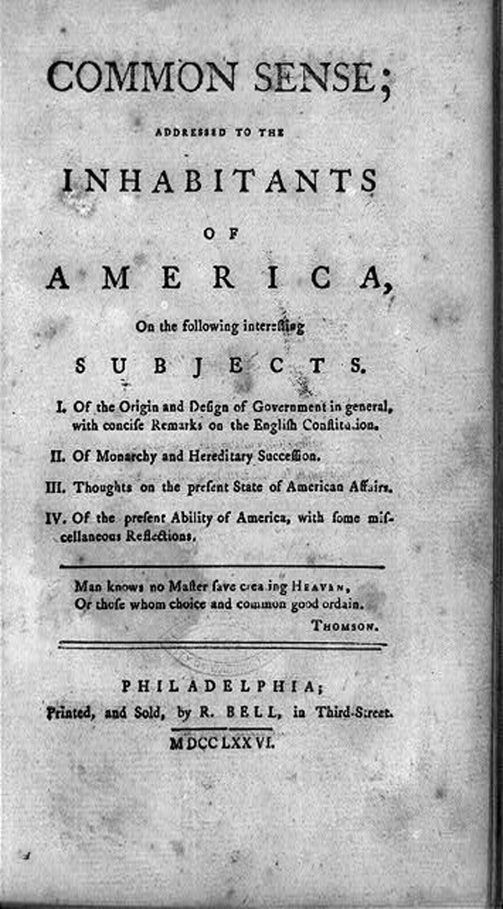
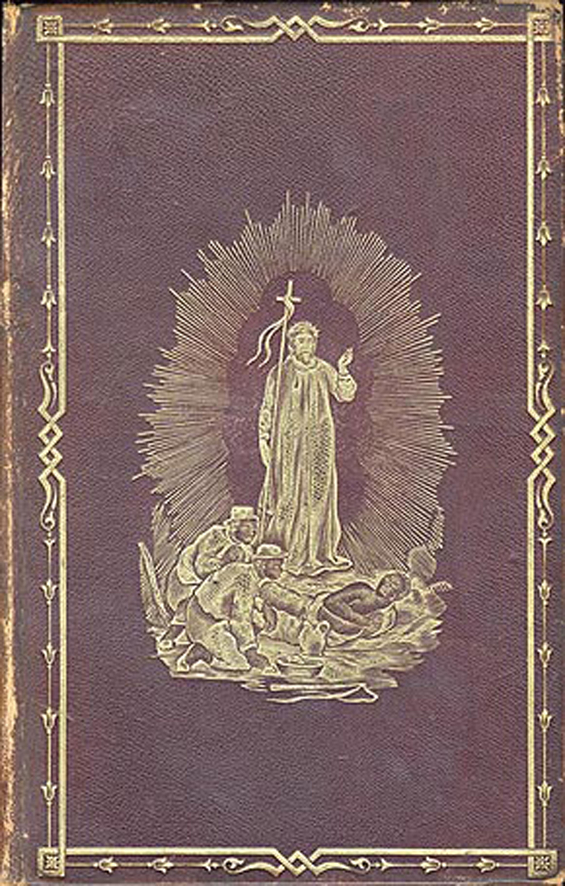
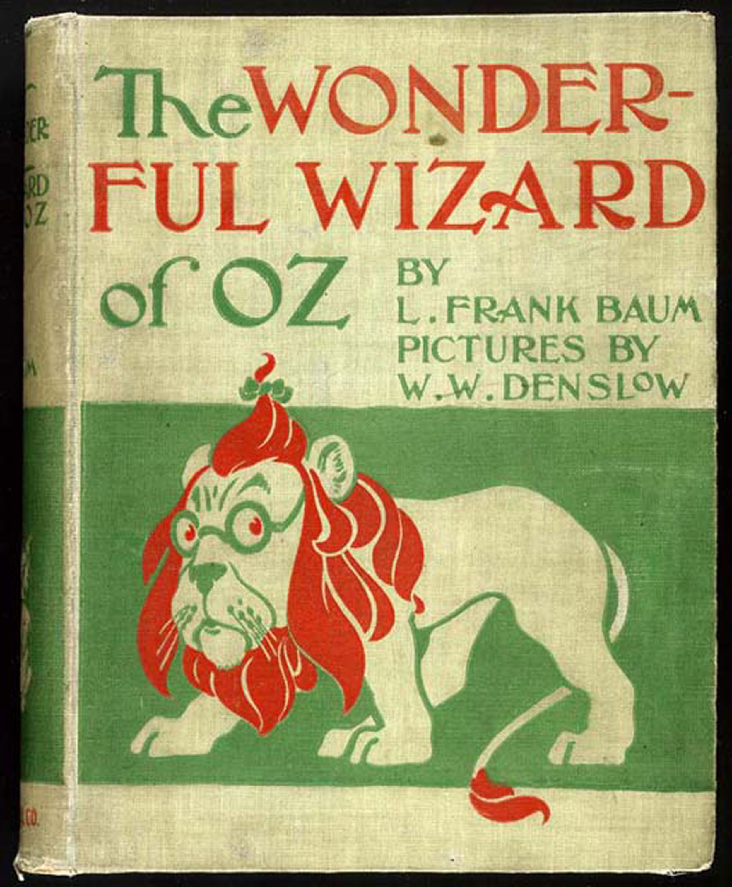

Figure 3.4
Common Sense, a pamphlet published anonymously in 1776, argued for the American colonies’ independence from Britain.
At the turn of the 18th century, the American colonies could only claim about 250 published books.Nina Baym, introduction to The Norton Anthology of American Literature (New York: W. W. Norton & Company, 2007) A:1–14. In 2010 alone, more than 288,000 new titles were published. As the United States has grown and developed, books have grown and developed along with it. Sometimes books have amplified differences within the nation, sometimes their authors have worked to proclaim a distinctive American style; sometimes the author has tried to expose hypocrisies in government and society, and sometimes the author has celebrated America’s multifaceted population. Throughout the history of the United States, books have influenced American popular culture and have been influenced by it as well.
In the years leading up to the American Revolution, newspapers and pamphlets were the publication method of choice because they could be quickly printed and were ideal for circulating short political and news items at a moment of rapid change. Thomas Paine’s Common Sense, first published anonymously in 1776, could be considered America’s first bestseller. As literacy rates soared in post-independence America and the nation became more stable, the market for longer books increased. William Hill Brown’s The Power of Sympathy: or, The Triumph of Nature, published in 1789, is considered the first American novel. Brown’s epistolary novelA book made up of letters of correspondence., which is a novel made up of letters of correspondence, warned about the dangers of seduction. Brown’s novel shares some features with a novel published 2 years later, Charlotte Temple by Susannah Rowson, another cautionary tale about a woman falling prey to seduction.
Though women were often the subjects of popular novels, they were increasingly the audience as well. Eighteenth-century Americans were influenced by Enlightenment values, which maintained that a strong nation needed an educated, moral population. Although the public realm of education, employment, and politics was dominated by men, women had control over the domestic sphere and the education of the next generation. The 18th-century idea that American women should educate their children for the good of the emerging nation, sometimes called republican motherhood, helped to legitimize, expand, and improve women’s education. Women’s literacy rates rose sharply during this period, and more and more books were tailored to women’s interests, as women tended to have more leisure time for reading. Authors such as Frances Burney and Mary Wollstonecraft wrote about issues facing women of the period and openly criticized the fixed role of females in society.
However, in these early years of the American novel, some people found the form potentially dangerous and subversive because it was too entertaining and it appealed to people’s, especially women’s, imaginations. A character in The Boarding School by Hannah Webster Foster, a popular writer of the time period, espouses this particular viewpoint:
Novels, are the favorite and the most dangerous kind of reading, now adopted by the generality of young ladies…. Their romantic pictures of love, beauty, and magnificence, fill the imagination with ideas which lead to impure desires, a vanity of exterior charms, and a fondness for show and dissipation, by no means consistent with that simplicity, modesty, and chastity, which should be the constant inmates of the female breast.Hannah Webster Foster, The Boarding School; or, Lessons of a Preceptress to Her Pupils (1829; repr., Whitefish, MT: Kessinger Publishing, 2010).
Part of the perceived threat of novels was their widespread popularity with many different kinds of people. An early biography of Susannah Rowson characterized the wide readership of her novel:
It has stolen its way alike into the study of the divine and into the workshop of the mechanic, into the parlor of the accomplished lady and the bed-chamber of her waiting maid, into the log-hut on the extreme border of modern civilization and into the forecastle of the whale ship on the lonely ocean. It has been read by the grey bearded professor after his ‘divine Plato’; by the beardless clerk after balancing his accounts at night, by the traveler waiting for the next conveyance at the village inn; by the school girl stealthfully in her seat at school.Robert Darnton, The Kiss of Lamourette: Reflections in Cultural History (New York: W. W. Norton & Company, 1996).
These popular 18th-century novels were preoccupied with providing moral guidance and cautionary tales to the citizens of the newly formed United States. Questions of freedom and responsibility were paramount as the emerging nation attempted to establish a uniquely American literature.
Rowson’s Charlotte Temple became the most popular book in the 1800s until Uncle Tom’s Cabin was published.Michael Winship, “Two Early American Bestsellers,” Common-place 9, no. 3 (2009), http://www.common-place.org/vol-09/no-03/winship/. Written by abolitionist and preacher Harriet Beecher Stowe in 1852—9 years before the beginning of the Civil War—Uncle Tom’s Cabin was a smash hit by any definition. An impassioned critique of slavery that tugged on readers’ emotions, the novel sold 300,000 copies in its first year and became the century’s second-best-selling book after the Bible.Africans in America Resource Bank, “Slave Narratives and Uncle Tom’s Cabin, 1845–1862,” PBS, http://www.pbs.org/wgbh/aia/part4/4p2958.html. Stowe’s novel has been credited with heightening tensions between the North and the South. The novel was not only popular domestically. The first London edition sold 200,000 copies in a year, and the book was the first American novel to be translated into Chinese.Africans in America Resource Bank, “Slave Narratives and Uncle Tom’s Cabin, 1845–1862,” PBS, http://www.pbs.org/wgbh/aia/part4/4p2958.html. The absence of international copyright law meant that Stowe was not compensated for most of these translations. Many unauthorized stage versions of the play were produced as well, causing historians to theorize that more people saw theatrical adaptations of the play than read the book. As with today’s stage and film adaptations of books, some of these versions of Stowe’s story were faithful to the novel, while others changed the story’s ending or even twisted the story to make it pro-slavery. In the early 1900s, 9 silent film versions of the novel were released, making Uncle Tom’s Cabin the most-filmed story of the silent film era. With her book, Stowe helped establish the political novel as an important touchstone of American literature.
Figure 3.5

Before strict copyright law, many different versions of Stowe’s novel cropped up.
Other 19th-century writers in the United States concentrated on developing a uniquely American style, a mode of self-expression distinct from European models. James Fenimore Cooper, author of The Last of the Mohicans (1826), wrote adventure stories that celebrated the American frontier, championing a theme that would intrigue U.S. writers for centuries to come. Poet Walt Whitman wrote Leaves of Grass (1855), a collection of poems that shocked readers with its frank sexuality and fresh use of language. In contrast to most other English-language poets at the time, Whitman wrote in free verse, mimicking the rhythms of actual speech in his poems. He was purposefully informal; he valued everyday speech; he spoke openly about sexual themes; and he was an important figure in establishing an American idiom that was open, informal, and focused on the experiences of common people. Washington Irving, author of the now-iconic short stories “Rip Van Winkle” (1819) and “The Legend of Sleepy Hollow” (1820), helped establish satire and wit as important aspects of the emerging American style.
Mark Twain famously used humor in his many works of journalism, travel writing, and fiction. Twain’s characters’ voices are funny, irreverant, and full of off-the-wall idioms and odd regional coinages. This passage, from the first chapter of The Adventures of Huckleberry Finn (1884), shows Twain’s use of distinctively American speech patterns: “The Widow Douglas she took me for her son, and allowed she would sivilize me; but it was rough living in the house all the time, considering how dismal regular and decent the widow was in all her ways; and so when I couldn’t stand it no longer I lit out.”Mark Twain, The Adventures of Huckleberry Finn (1885; repr., New York: Harper & Brothers, 1912). Twain was also one of the first writers to use a then-newfangled invention—the typewriter.
Edgar Allan Poe is best known for writing macabre stories and poems like “The Raven” (1845), “The Cask of Amontillado” (1846), and “The Tell-Tale Heart” (1843). A master of the Gothic genre, Poe is also credited with writing the first detective story, 1841’s “The Murders in the Rue Morgue.” (Some people also credit Poe with the invention of the horror story and the science fiction story.) In this and other stories, Poe established many of the classic features of detective stories, including Arthur Conan Doyle’s Sherlock Holmes tales: a brilliant, crime-solving detective who works outside the standard police system; the detective’s assistant or friend, who serves as narrator; and an emphasis on analysis and solving a crime through reason. Poe had such a strong effect on the mystery genre that the Mystery Writers of America annually give out the Edgar Awards, named in honor of Poe.
At the end of the 1800s, American literature could be broadly categorized as reflecting an interest in the natural landscape, preoccupation with questions of identity (both of the individual and the nation), an interest in humor or satire, a pride in common speech, and an interest in politics. An emerging interest in what we now call genre fiction was increasing and would become a fully fledged movement as the 20th century progressed.
The production of books in the 1900s was cheaper than ever because of improved technology. The 20th century saw a multiplicity of genres that began to better reflect the diversity of experiences and interests in the United States. Furthermore, the paperback revolution eroded the distinction between high and low art. By the end of the century, however, books were facing competition for attention with films, television, video games, and the Internet.
In 1900, L. Frank Baum published The Wonderful Wizard of Oz, a novel set in the fantastical world of Oz. It became the best-selling children’s book for the next 2 years and went on to spawn 13 sequels. Baum’s book is considered part of the so-called golden age of children’s literature, which is considered to have begun with Lewis Carroll’s Adventures of Alice in Wonderland (1865) and ended with A. A. Milne’s Winnie-the-Pooh books (1924–1928). Along with children’s literature, other kinds of genre fictionWorks that are intended to fit into a known genre or category, such as western, romance, mystery, or science fiction. saw their birth or growth in the 20th century. Owen Wister’s The Virginian (1902) and Zane Grey’s Riders of the Purple Sage (1912) established the Western as a uniquely American genre that would influence the popular Wild West films of the 1920s and beyond. Other genres including science fiction, horror, mystery, and romance sprung up out of the late-19th and early-20th dime novels, named for their cheap cost and known for their sensational, quickly written stories. The dime novel gave way to the even-cheaper pulp magazines and books, inexpensive publications named for the cheap pulp paper they were printed on. Pulp storiesSensationalistic stories from books and magazines that were named for the cheap, wood-pulp paper they were printed on. were generally sensational and featured sordid tales of murder, prostitution, and gangster violence; others told fantastical stories of aliens or monsters. The pulps were gleefully low culture and were quite popular with readers. Conan the Barbarian, Tarzan, Zorro, and The Shadow all made their first appearances as characters in early pulps. The paperback revolution of the 1930s, 1940s, and 1950s gave genre stories a wider reach in a more durable format.
Figure 3.6
L. Frank Baum’s The Wonderful Wizard of Oz was the basis for the famous 1939 movie The Wizard of Oz.
Figure 3.7

Pulp publications captured readers with their lurid, colorful covers.
While many 19th-century U.S. writers worked to create a distinctive American style, some 20th-century writers aimed to debunk American myths. After World War II, the United States emerged as a dominant world power. Some writers became preoccupied with critiquing American society and government. Dissatisfied with the widespread 1950s ideals of conformity and homogeneity, Beat GenerationThe name given to a group of American writers who came to prominence in the 1950s and who were known for literary experimentation and nonconformity. authors wrote in a freewheeling, informal style and proudly described their drug use and sexual exploits. Touchstone works of the Beat Generation include Allen Ginsberg’s Howl and Other Poems (1956), Jack Kerouac’s On the Road (1957), and William S. Burroughs’s Naked Lunch (1959). These books celebrated road trips, drug trips, spritual yearning, distrust of the mass media, and gleeful obscenity, and they helped pave the way for the hippie movement of the 1960s.
After the end of the Cold War in 1991, American literature saw an upswing in books that expressed the diversity of voices and experiences of late-20th-century America. Jhumpa Lahiri and Amy Tan wrote about the immigrant experience; Sherman Alexie and Louise Erdrich penned acclaimed novels about Native American life; and Toni Morrison explored the political and historical dimensions of slavery and race in the United States. Sometimes called multicultural literatureWorks that promoted cross-cultural understanding by examining different value systems, histories, traditions, and speech patterns of people in America., these and other books were celebrated as a way to promote cross-cultural understanding by examining the different value systems, histories, traditions, and speech patterns of people in America.
The 21st-century market has so far been dominated by several massively popular novel franchisesA series of books with recurring characters and high marketability.—such as Left Behind, Harry Potter, The Twilight Saga, and The Da Vinci Code—that have collectively sold hundreds of millions of copies. These haven’t only been popular as books; they’ve also spawned equally lucrative films and merchandise tie-ins. Consumers who are so inclined can purchase Twilight Saga wall decals, Harry Potter earrings, or Da Vinci Code board games. In some ways, such novel franchises harken back to Uncle Tom’s Cabin in the 19th century, which was a multiplatform success popular on the page, stage, and screen.
Figure 3.8

“Howl” marked a turning point in United States obscenity laws.
Allen Ginsberg’s poem “Howl” met with strong reactions, both positive and negative, when it was released by City Lights Books in 1956. Ginsberg’s poem was instantly notorious for its descriptions of sexual acts, both heterosexual and homosexual, drug use, mental hospitals, and antiestablishment conspiracies. Many readers were shocked by Ginsberg’s words; however, that was precisely his intent. He once described “Howl” as “an emotional time bomb that would continue exploding in U.S. consciousness in case our military-industrial-nationalist complex solidified.”Allen Ginsberg, Howl, ed. Miles Barry, (New York: Harper Perennial, 1995). In 1957, U.S. customs officials seized a shipment of copies of the book on the grounds of obscenity, but soon after dropped their charges. However, the poem’s legal struggles weren’t over; that same year, the California police sent plainclothes officers to City Lights Bookstore to buy a copy and then promptly arrested the salesclerk and the store owner on charges of obscenity.
The “Howl” trial came in the same year as several other landmark Supreme Court cases that liberalized the legal definition of obscenity in the United States. Before 1957, a more strict definition held that any material with a possible immoral influence was obscene. This stance led to a ban on works by authors such as James Joyce and D. H. Lawrence. Under the new law, a work would be judged by “community standards” and could only be judged obscene if its “dominant theme taken as a whole appeals to the prurient interest.” In other words, books could no longer be deemed obscene on the basis of a single four-letter word. It also meant that the poem’s obscenity would have to be judged against the relatively liberal standards of San Francisco, where the police sting operation had taken place.
The ACLU leapt to City Lights’ defense, and the presiding judge overturned the obscenity charge, citing the poem’s “redeeming social importance.” In hindsight, the judge seems undoubtedly correct about the poem’s social importance. “Howl” and the obscenity rulings of 1957 marked a crucial bridge between the post–World War II years of enthusiastic patriotism and social conformity and the 1960s ethos of free love and antigovernment sentiment. By the time of Ginsberg’s death in 1997, Howl and Other Poems had sold more than 800,000 copies.Johan Raskin, American Scream: Allen Ginsberg’s “Howl” and the Making of the Beat Generation (Berkeley: University of California Press, 2006).
Consider a novel or book from any era in U.S. history that has made an impression on you. Research this book on the Internet to discover how it played a part in shaping U.S. popular culture, how culture shaped the book in question, or both. Then, answer the following questions: